AI for EE Research¶
From Researcher to Orchestrator¶
A hands-on guide to using AI tools and agents for everyday research in electrical engineering and computer design
The Problem: Research Is a Pipeline¶
- Literature search
- Data analysis
- Brainstorming and problem framing
- Scientific coding and simulation
- Manuscript preparation
AI can now absorb a large share of each stage, but only for researchers who know how to direct it, check it, and own the result.
The Big Idea: Researcher as Orchestrator¶
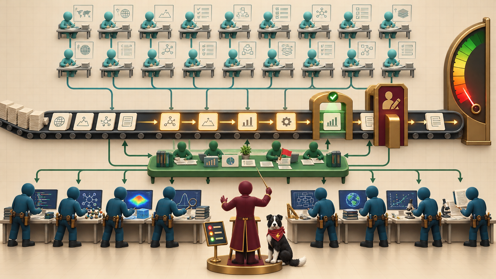
- Stop doing every task personally
- Coordinate ~20 planning agents and ~10 execution agents
- You set direction, supply domain judgment, resolve conflicts, and decide what is true
- You stay accountable for the science
Who It Is For¶
Audience: MS and PhD students, postdocs, and faculty in EE, computer engineering, and computer design
Prerequisites
- Graduate standing or equivalent research experience
- One programming language, preferably Python
- Command line, text editor, and Git basics
- No prior ML, prompt engineering, or agent experience
How the Book Is Organized¶
| Part | Chapters | Theme |
|---|---|---|
| 1. Foundations | 1–4 | Workflows, how LLMs work, prompts, context |
| 2. Memory and skills | 5–7 | Markdown, Git, knowledge graphs, skills |
| 3. Agents and teams | 8–10 | Tools, supervision, orchestration |
| 4. Research tasks | 11–15 | Literature, data, code, ideas, manuscripts |
| 5. Communicate and trust | 16–20 | MicroSims, verification, ethics, agents, capstone |
Foundations: How Language Models Work¶
Chapters 2–3
- Text becomes tokens; the context window is a shared budget
- Models optimize plausibility, not truth, so fluent answers can be false
- Fabricated citations come from this, not from a bug
- Choose models by capability, cost, latency, privacy, and reproducibility
- A prompt is a specification: instructions, constraints, roles, examples
Context Engineering¶
Chapter 4
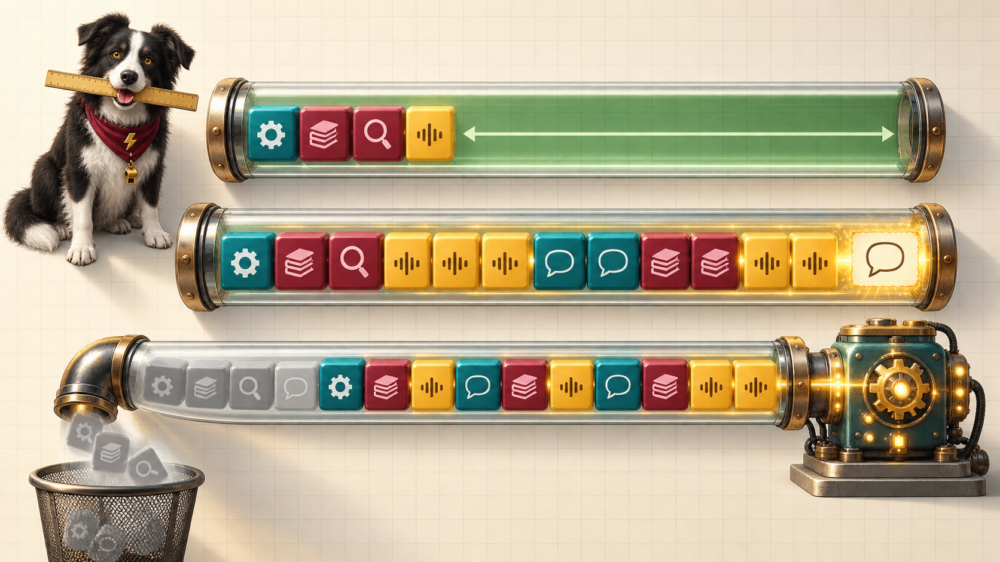
- Decide everything the model sees
- Task spec: goal, inputs, outputs, constraints, definition of done
- Ground answers in sources
- Chain prompts with checks between steps
- Defend against prompt injection
Memory: Markdown, Git, and Knowledge Graphs¶
Chapters 5–6
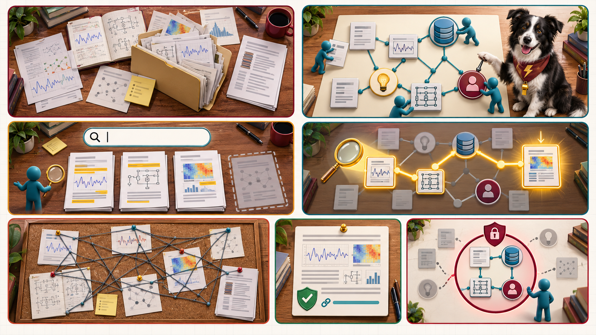
- Markdown is readable by both humans and agents
- AGENTS.md / CLAUDE.md hold goals, conventions, constraints
- Git gives history and recovery
- A personal knowledge graph links notes, papers, experiments, and people as queryable entities
Agent Skills: Repeatable Tasks as Commands¶
Chapters 6–7
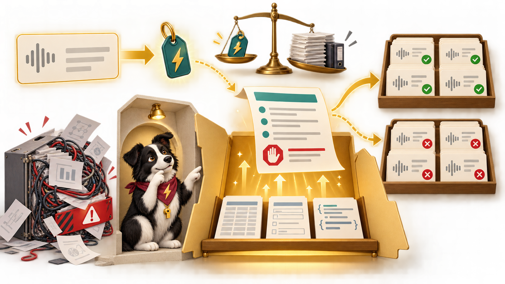
- Anatomy: name, description, instructions, supporting files
- One-sentence scope; single-purpose skills
- Progressive disclosure keeps context small
- Test that it fires, stays quiet, and gives known answers
- Version, share, and maintain
Agents, Tools, and Subagents¶
Chapter 8
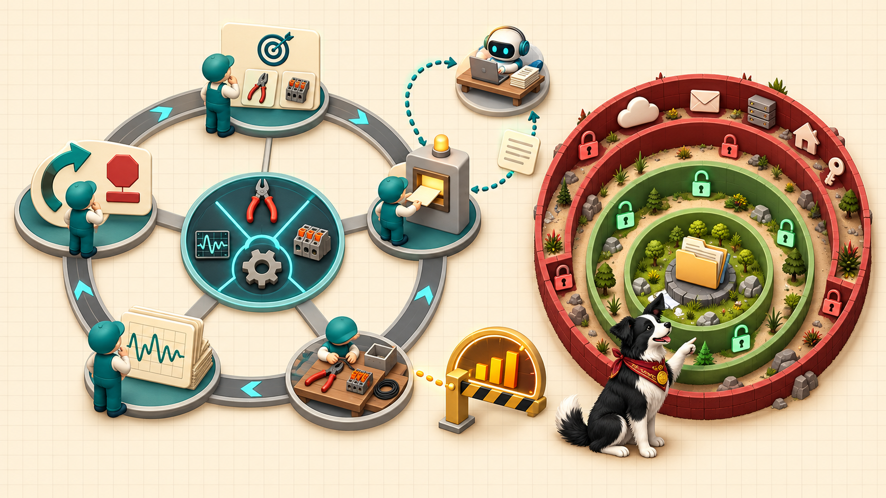
- Agent = model + tools + loop
- Decide, call a tool, observe, repeat
- File access, shell, code execution, MCP
- Sandboxing and permissions set the limits
- Subagents run in parallel with isolated context
Supervising Agents and Assigning Roles¶
Chapter 9
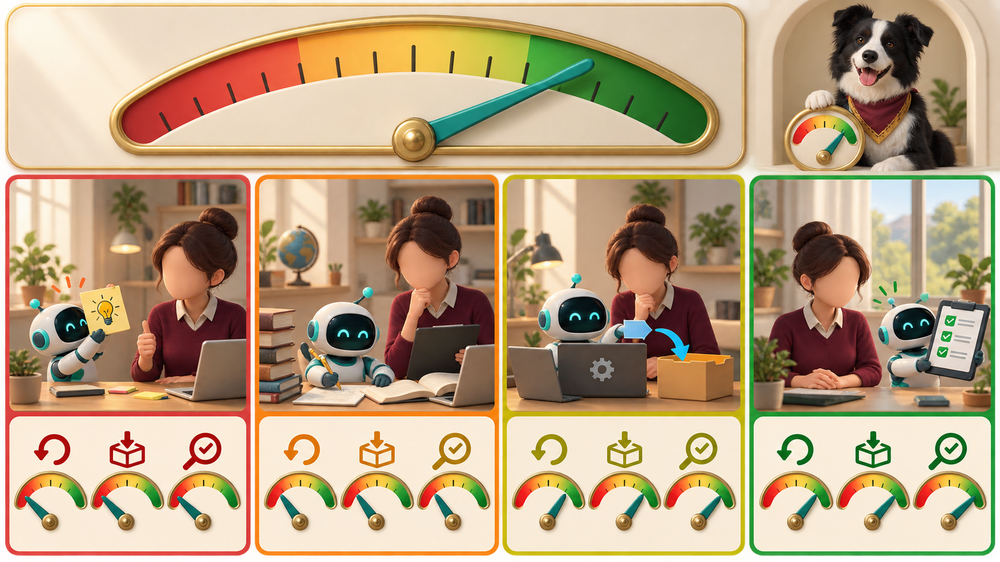
- Autonomy is a dial set per task
- Set it by reversibility, reach, and verifiability
- Log everything; bound cost and runtime
- Know the failure modes: premature completion, scope drift, test weakening, runaway loops
- Roles: planner, executor, reviewer, researcher, coder, writer
Orchestrating Agent Teams¶
Chapter 10
- Break work into tasks with owners, outputs, and checks
- Dependencies set the critical path, and parallelism cannot shorten it
- Handoffs through files and a shared workspace
- Review checkpoints and human approval gates
- Scaling stops paying off when review cost exceeds the work saved
Literature Search and Synthesis¶
Chapter 11
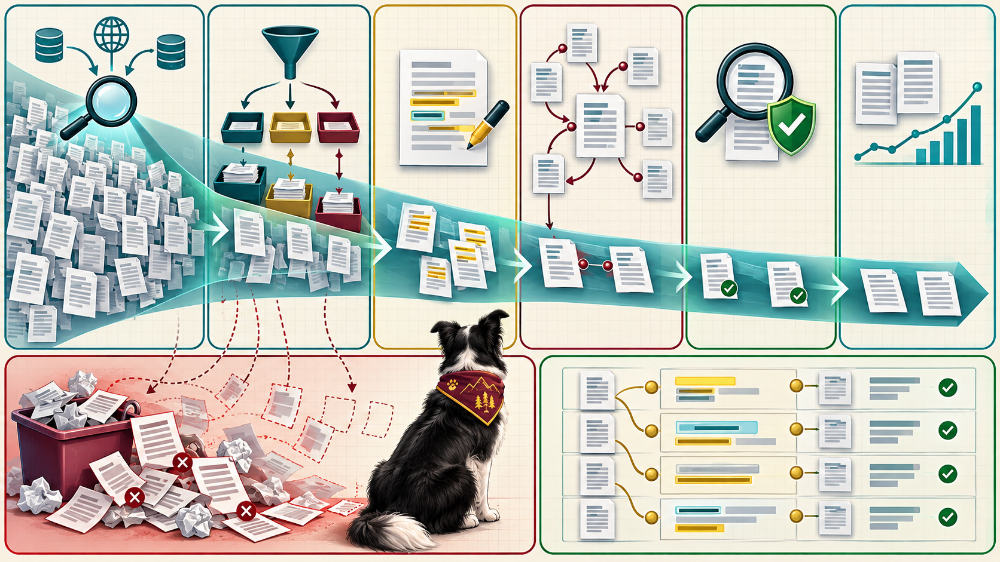
- Write a repeatable search strategy
- Favor recall when scoping, then triage for precision
- Chain citations forward and backward
- Verify every citation against the source
- Tie claims to locations in sources
Data Analysis, Simulation, and Code¶
Chapters 12–13

- Record measurement settings; keep raw data read-only
- Cleaning is a logged script; outliers are information
- Silent errors run cleanly and return wrong numbers
- Test with known answers
- Apply numerical sanity checks and pin environments
Brainstorming and Manuscripts¶
Chapters 14–15
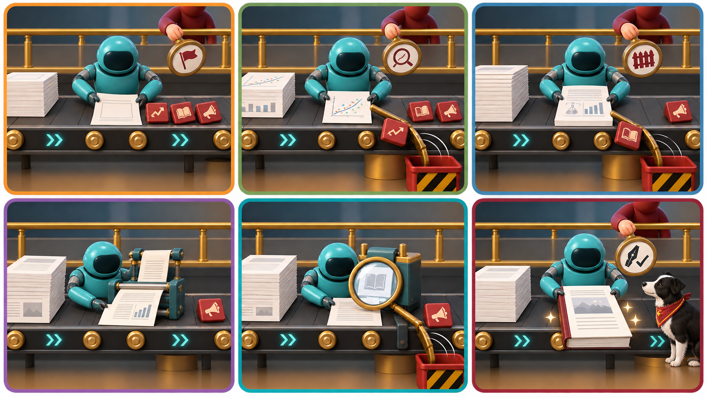
- AI offers volume and range; its weakness is agreement
- Use a devil's advocate prompt and check analogies
- Move from hunch to falsifiable hypothesis
- Draft from evidenced claims; abstract last
- Protect your voice and your numbers
MicroSims: Communicating by Interaction¶
Chapter 16
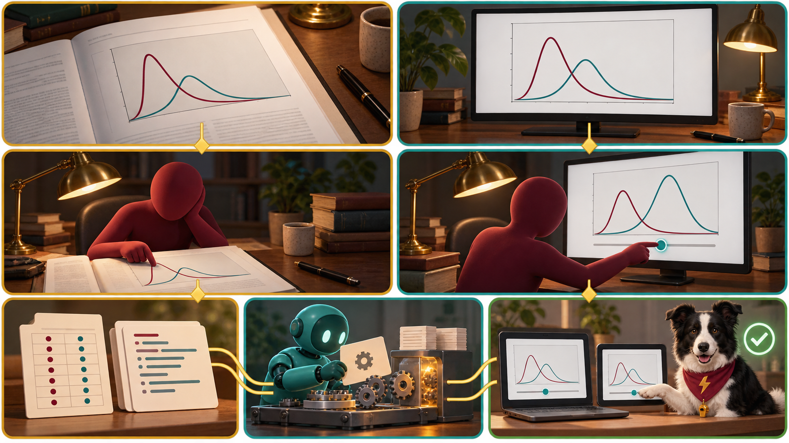
- Match the medium to the point
- A static figure shows a fact; an interactive shows a dependence
- A MicroSim is small, single-concept, embeddable
- Built with p5.js and built-in controls
- Specify precisely, then check what the agent builds
Verification and Reproducibility¶
Chapter 17
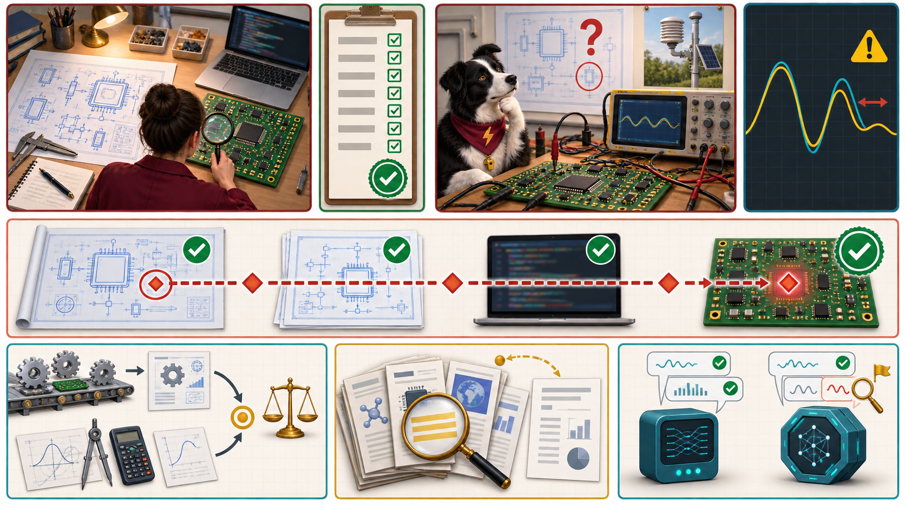
- Verification: done right? Validation: the right work?
- Independent checks with different failure causes
- Primary-source and cross-model checks
- Fix success criteria before seeing the result
- Audit trails and reproducibility packages
Responsible and Ethical Use¶
Chapter 18
- Accountability cannot be delegated; AI is not an author
- Disclose AI use per venue and institutional policy
- Protect confidential data, participant data, and unpublished results
- Respect licensing and intellectual property
- Check for bias; keep your own skills sharp
Personal Agents and Case Studies¶
Chapters 19–20
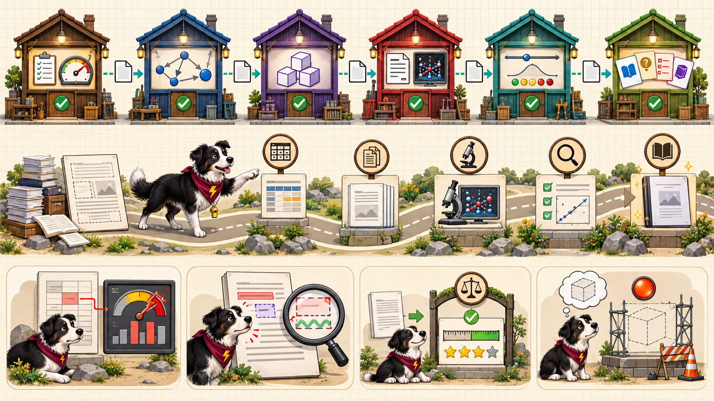
- Always-on agents (Grok Bot, Dots, Muse, Claude Cowork, OpenClaw, Hermes Agent)
- Judge them by criteria, not brands: where they run, what they reach, cost, data
- Real cases, including failures: the MicroSims arXiv paper, this textbook's skill pipeline
- Capstone: an end-to-end task with an agent team, plus an adoption plan
Key Takeaways¶
- Direct, check, and own — the researcher stays accountable
- Context and memory make agents reliable: Markdown, Git, knowledge graphs, skills
- Autonomy is a dial set per task, bounded by logs and review
- Verify independently; disclose AI use
- Start small, then adopt in order
Read the book: dmccreary.github.io/ai-for-ee-research